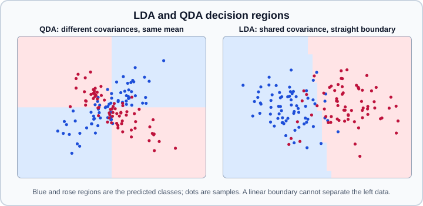

Linear & Quadratic Discriminant Analysis
|
This content was generated with the assistance of AI and should be verified against the official documentation before being relied on in production. |
Linear discriminant analysis (LDA) and quadratic discriminant analysis (QDA) are generative classifiers: they model the distribution of the features inside each class as a Gaussian and classify with Bayes' rule. They have closed-form solutions, almost no hyperparameters, and LDA doubles as a supervised dimensionality-reduction method. They are available in sklearn.discriminant_analysis. The covariance estimators that make them work with few samples are in sklearn.covariance, discussed in Covariance & Density Estimation.
Examples were run on Python 3.13 with scikit-learn 1.9.1 on 2026-10-31. No snippet needs PyTorch or TensorFlow.
The model
For a class \(k\) with prior \(P(y=k)\), both methods assume \(P(x \mid y=k) = \mathcal{N}(\mu_k, \Sigma_k)\) and predict the class with the largest posterior. QDA lets every class have its own covariance matrix \(\Sigma_k\), which makes the log-posterior quadratic in \(x\):
\[\log P(y=k \mid x) = -\tfrac{1}{2} \log \lvert \Sigma_k \rvert - \tfrac{1}{2} (x - \mu_k)^{\top} \Sigma_k^{-1} (x - \mu_k) + \log P(y=k) + \text{const}\]
LDA constrains all classes to share one covariance \(\Sigma\). The quadratic terms cancel between classes and the decision surface is linear: the discriminant of class \(k\) is \(\omega_k^{\top} x + \omega_{k0}\) with \(\omega_k = \Sigma^{-1} \mu_k\) and \(\omega_{k0} = -\tfrac{1}{2} \mu_k^{\top} \Sigma^{-1} \mu_k + \log P(y=k)\). These are the fitted coef_ and intercept_ (for two classes, scikit-learn reports the difference between the two class discriminants, so coef_ has one row).
Two relations help to place the models. If the QDA covariances are restricted to be diagonal, the model is the Gaussian naive Bayes classifier (see Naive Bayes). And LDA gives a linear decision rule like logistic regression (see Linear Models) but estimates it from class means and a common covariance instead of maximising the conditional likelihood directly. When the Gaussian assumption holds, LDA is more efficient with few samples; when it does not (heavy tails, categorical features, strong outliers), logistic regression is usually more robust.

When LDA is enough and when QDA is needed
The first example builds two classes with the same mean and opposite correlation. Because the means coincide, no linear boundary can separate them (LDA is close to chance), while the quadratic boundary of QDA can use the different covariances.
import numpy as np
from sklearn.discriminant_analysis import LinearDiscriminantAnalysis, QuadraticDiscriminantAnalysis
from sklearn.model_selection import cross_val_score
rng = np.random.RandomState(0)
n = 300
X0 = rng.multivariate_normal([0, 0], [[1.0, 0.8], [0.8, 1.0]], size=n)
X1 = rng.multivariate_normal([0, 0], [[1.0, -0.8], [-0.8, 1.0]], size=n)
X = np.vstack([X0, X1])
y = np.repeat([0, 1], n)
for name, model in [("LDA", LinearDiscriminantAnalysis()), ("QDA", QuadraticDiscriminantAnalysis(store_covariance=True))]:
print(name, round(cross_val_score(model, X, y, cv=5).mean(), 3))
qda = QuadraticDiscriminantAnalysis(store_covariance=True).fit(X, y)
print(qda.means_.round(2).tolist(), qda.priors_)
print(qda.covariance_[0].round(2).tolist())
lda = LinearDiscriminantAnalysis(store_covariance=True).fit(X, y)
print(lda.coef_.round(2), lda.intercept_.round(2), lda.covariance_.round(2).tolist())This printed a five-fold cross-validated accuracy of 0.52 for LDA and 0.802 for QDA, and the QDA class covariance close to the one used to generate the data (variances near 1 and covariance near 0.82). Fitted attributes shown: means_ (class means), priors_ (class priors), covariance_ (a list of per-class matrices for QDA, one shared matrix for LDA) which exists only when store_covariance=True.
Choose by the data. QDA has many more parameters (one covariance matrix per class: about \(K d(d+1)/2\) for \(K\) classes and \(d\) features), so it needs enough samples in every class; LDA estimates one matrix and is stable much sooner. A practical rule is to start with LDA, try QDA only when each class has far more samples than features, and compare both with cross-validation as in Cross-Validation.
Solvers, shrinkage and covariance estimators
LinearDiscriminantAnalysis has three solvers.
| Solver | Capabilities | Notes |
|---|---|---|
|
classification and |
Does not compute the covariance matrix, so it is the choice when the number of features is large. It does not support shrinkage or |
|
classification only |
Solves the least-squares problem for the coefficients without inverting the covariance. Supports shrinkage and a custom covariance estimator. |
|
classification and |
Maximises the ratio of between-class to within-class scatter. Supports shrinkage and a custom estimator, but needs the full covariance matrix, so it suits fewer features. |
When the number of samples is not much larger than the number of features, the empirical covariance is ill-conditioned or singular and the classifier overfits. Shrinkage pulls the covariance towards a scaled identity (a diagonal matrix of variances):
-
shrinkage="auto"chooses the shrinkage intensity analytically with the Ledoit-Wolf lemma. -
A float between 0 (the empirical covariance) and 1 (the diagonal of the variances) sets it by hand; tune it with Hyperparameter Search.
-
covariance_estimatoraccepts any estimator with afitmethod that sets acovariance_attribute, as insklearn.covariance: for exampleOAS(), which can give a lower error than Ledoit-Wolf when the data really are Gaussian within classes, orLedoitWolf(),ShrunkCovariance()or a robust estimator. Use eithershrinkageorcovariance_estimator, not both, and only withlsqroreigen.
The next example uses more features than samples per class. The default solver is the worst, shrinkage helps, and QDA with its default svd solver refuses to fit.
import numpy as np
from sklearn.covariance import OAS
from sklearn.datasets import make_classification
from sklearn.discriminant_analysis import LinearDiscriminantAnalysis, QuadraticDiscriminantAnalysis
from sklearn.model_selection import cross_val_score
# 120 samples, 60 features, 3 classes: few samples per feature
X, y = make_classification(
n_samples=120, n_features=60, n_informative=5, n_classes=3, n_clusters_per_class=1, random_state=0
)
models = {
"LDA svd (default)": LinearDiscriminantAnalysis(),
"LDA lsqr, shrinkage=auto": LinearDiscriminantAnalysis(solver="lsqr", shrinkage="auto"),
"LDA eigen, shrinkage=0.3": LinearDiscriminantAnalysis(solver="eigen", shrinkage=0.3),
"LDA lsqr, OAS": LinearDiscriminantAnalysis(solver="lsqr", covariance_estimator=OAS()),
}
for name, model in models.items():
print(f"{name:26s} {cross_val_score(model, X, y, cv=5).mean():.3f}")
for qda in (QuadraticDiscriminantAnalysis(), QuadraticDiscriminantAnalysis(reg_param=0.5)):
try:
qda.fit(X, y)
except np.linalg.LinAlgError as exc:
print("LinAlgError:", str(exc)[:58])
try:
LinearDiscriminantAnalysis(solver="svd", shrinkage="auto").fit(X, y)
except NotImplementedError as exc:
print("NotImplementedError:", exc)LDA svd (default) 0.683
LDA lsqr, shrinkage=auto 0.767
LDA eigen, shrinkage=0.3 0.767
LDA lsqr, OAS 0.800
LinAlgError: The covariance matrix of class 0 is not full rank. When us
LinAlgError: The covariance matrix of class 0 is not full rank. When us
NotImplementedError: shrinkage not supported with 'svd' solver.Shrinkage lifts LDA from 0.683 to 0.800 here. Each class has about 40 samples for 60 features, so its covariance is singular, and QuadraticDiscriminantAnalysis raises LinAlgError instead of fitting; the full message says that with solver='svd' every class needs more samples than features and suggests solver='eigen' with shrinkage. reg_param does not rescue it, because the svd solver only has as many variances as the class has samples. Requesting shrinkage with the svd solver of LDA raises NotImplementedError. This is one synthetic dataset and the ranking will vary on real data; the point is the mechanism, not the numbers.
QuadraticDiscriminantAnalysis options
QuadraticDiscriminantAnalysis (all arguments keyword-only) takes solver ("svd" by default, or "eigen"), shrinkage, priors, reg_param, store_covariance, tol and covariance_estimator. The reference page for 1.9 says that shrinkage and covariance_estimator work only with the eigen solver, while svd does not compute the covariance matrix and is recommended with many features. reg_param (default 0.0) regularises the per-class covariance estimate by blending the scaled variances towards the identity, \(S^2 \leftarrow (1 - r) S^2 + r I\). tol is the threshold below which a variance counts as zero; a class covariance that is rank deficient by that test makes fit raise LinAlgError (the docstring still describes it as controlling a warning). The fitted attributes include means_, priors_, rotations_ and scalings_ (the principal axes and variances of each class), and covariance_ if store_covariance=True.
The solver, shrinkage and covariance_estimator arguments of QDA are recent additions; older releases only offer reg_param, so check your installed version before using them. On the data of the previous example, where the default QDA could not fit, the eigen solver with shrinkage works:
from sklearn.covariance import OAS
from sklearn.datasets import make_classification
from sklearn.discriminant_analysis import QuadraticDiscriminantAnalysis
from sklearn.model_selection import cross_val_score
X, y = make_classification(
n_samples=120, n_features=60, n_informative=5, n_classes=3, n_clusters_per_class=1, random_state=0
)
# shrinkage and covariance_estimator need the eigen solver
qda = QuadraticDiscriminantAnalysis(solver="eigen", shrinkage="auto")
print(round(cross_val_score(qda, X, y, cv=5).mean(), 3))
qda_oas = QuadraticDiscriminantAnalysis(solver="eigen", covariance_estimator=OAS())
print(round(cross_val_score(qda_oas, X, y, cv=5).mean(), 3))0.817
0.792Priors and class imbalance
By default the class priors are the class proportions in the training set. priors=[...] (summing to 1) fixes them, which shifts the decision thresholds towards the more likely classes and is the principled way to adapt a discriminant classifier to a deployment prior that differs from the training sample. For rare-class problems this changes the intercept only; evaluate with the metrics in Metrics & Scoring and see Imbalanced Data. LDA and QDA do not accept class_weight.
LDA as supervised dimensionality reduction
LDA can project the data onto at most \(\min(d, K - 1)\) directions, where \(K\) is the number of classes, chosen to maximise the separation between class means relative to the within-class spread. Select the target dimension with n_components; it affects only transform, not fit or predict. Asking for more than the limit raises a ValueError. Only the svd and eigen solvers provide transform; with svd the explained_variance_ratio_ attribute reports the share of between-class variance of each component.
from sklearn.datasets import load_wine
from sklearn.discriminant_analysis import LinearDiscriminantAnalysis
from sklearn.model_selection import cross_val_score
from sklearn.pipeline import make_pipeline
from sklearn.preprocessing import StandardScaler
from sklearn.linear_model import LogisticRegression
X, y = load_wine(return_X_y=True)
lda2 = make_pipeline(StandardScaler(), LinearDiscriminantAnalysis(n_components=2)).fit(X, y)
Z = lda2.transform(X)
print(Z.shape, lda2[-1].explained_variance_ratio_.round(3))
clf = make_pipeline(StandardScaler(), LinearDiscriminantAnalysis(n_components=2), LogisticRegression())
print("LDA projection + logistic regression:", round(cross_val_score(clf, X, y, cv=5).mean(), 3))
print(lda2[-1].priors_.round(3), LinearDiscriminantAnalysis(priors=[1/3, 1/3, 1/3]).fit(X, y).priors_)The projection of the 178 wine samples had two components with explained variance ratios 0.687 and 0.313, the pipeline of scaling, LDA projection and logistic regression scored 0.983 in five-fold cross-validation, and the class priors learned from the data were 0.331, 0.399 and 0.270.
Unlike PCA (see Decomposition), LDA uses the labels, so the projection must be fitted only on the training fold: put it inside a Pipeline as above so that cross-validation refits it per fold (see Pipelines). Fitting it on the whole dataset before splitting leaks label information, one of the leakage patterns in Common Pitfalls.
Practical notes and pitfalls
-
Gaussian assumption. Strongly non-Gaussian features, many categorical dummies, or outliers hurt both methods. Transform skewed features (see Scaling & Transforming) or use a more robust covariance estimator.
-
Scaling. Predictions of LDA and QDA are invariant to invertible linear rescaling of the features, but the shrinkage and regularisation terms are not, so standardise before shrinking.
-
Collinearity. With perfectly collinear features a covariance is singular; QDA raises
LinAlgErrorwhen a class covariance is rank deficient (thetolcheck). Use LDA shrinkage, QDA withsolver="eigen"andshrinkage, or drop features (see Feature Selection). -
Few samples in a class. QDA needs a covariance per class and fails or overfits for rare classes. LDA pools the covariance.
-
Probabilities.
predict_probais available but derived from the Gaussian model; verify with Probability Calibration before using the numbers as risks. -
Choosing the model. For a comparison with other classifiers on tabular data see Choosing an Estimator; for the broader family of classifiers see Classic Algorithms Overview.